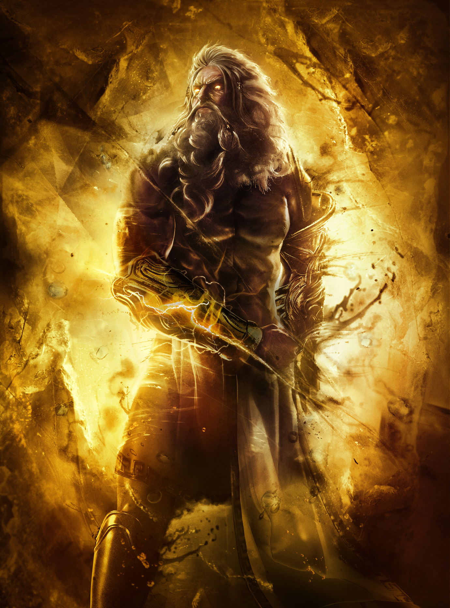
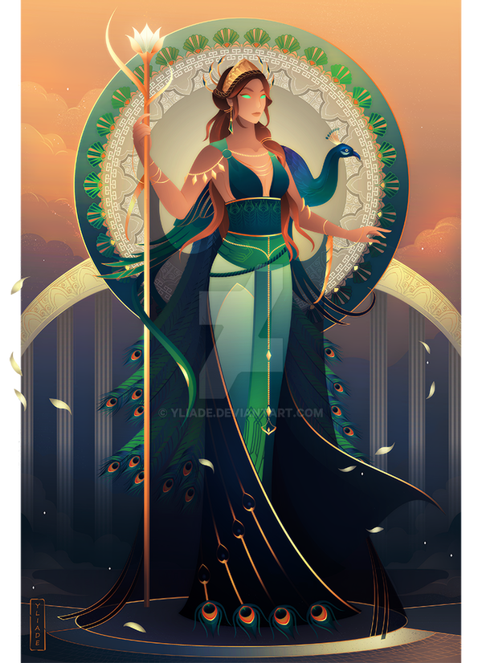
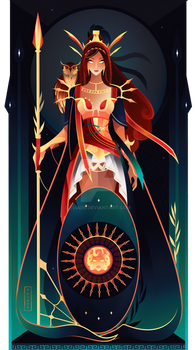
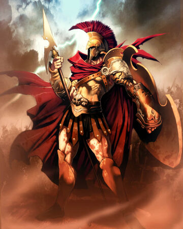
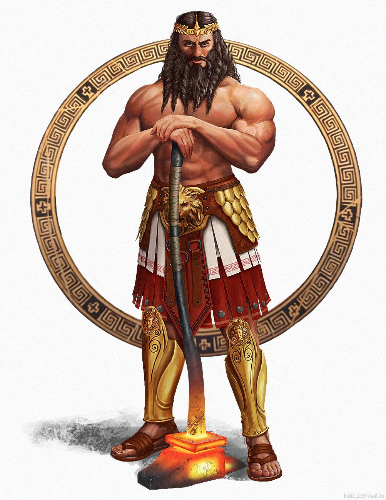
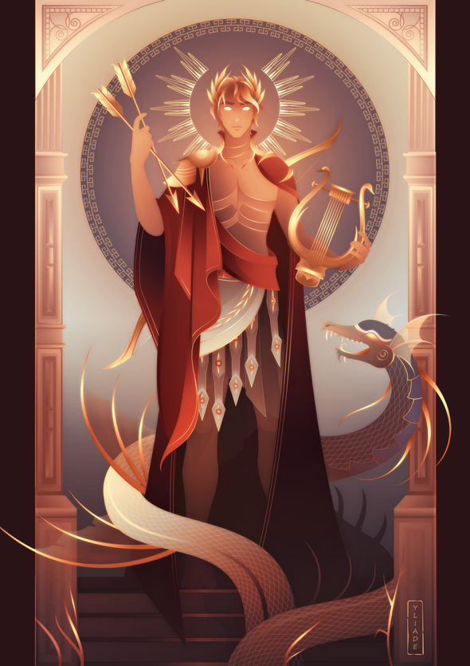
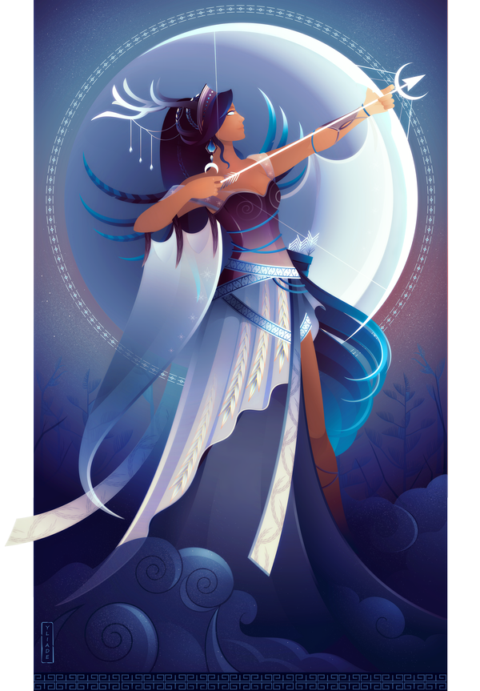
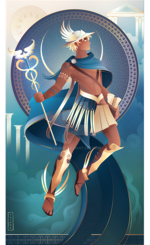
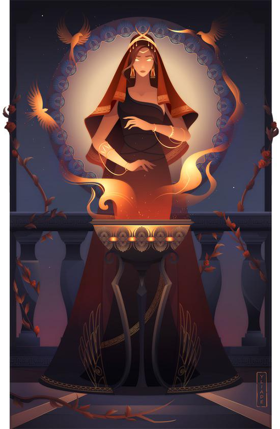

Zeus
Zeus is the god of the sky, lightning and the thunder in Ancient Greek religion and legends, and ruler of all the gods on Mount Olympus. Zeus is the sixth child of Cronos and Rhea, king and queen of the Titans. His father, Cronos, swallowed his children as soon as they were born for fear of a prophecy which foretold that one of them would overthrow him. When Zeus was born, Rhea hid him in a cave on Mount Ida in Crete, giving Cronos a stone wrapped in swaddling clothes to swallow instead. When Zeus was older he went to free his brothers and sisters; together with their allies, the Hekatonkheires and the Elder Cyclopes, Zeus and his siblings fought against the Titans in a ten-year war known as the Titanomachy. At the end of the war, Zeus took Kronos' scythe and cut him into pieces, throwing his remains into Tartarus. He then became the king of gods. The supreme deity of the Greek pantheon, Zeus was universally respected and revered throughout Ancient Greece; the ancient Olympic Games were held at the site of Olympia every four years in honor of him. Highly temperamental, Zeus was armed with the mighty thunderbolt, said to be the most powerful weapon among the gods. Zeus was married to his sister, Hera, though he was infamous for his infidelity, taking on an almost innumerable amount of lovers and consorts, both mortal and divine including Karis and Hercules' mother. Zeus was known for throwing thunderbolts at people. The god of honor and justice, Zeus was the one who both established and enforced law, and served as the standard for kings to follow, ensuring they did not abuse the power of their position. His symbols were the thunderbolt, a sceptre, an oak tree, and the eagle and bull were his sacred animals. His Roman equivalent is Jupiter. Zeus was the strongest Greek god, the ruler of all gods. He also had a lot of children that he was not supposed to have.
Poseidon
Poseidon is the god of the sea, earthquakes, storms and horses in ancient Greek religion and myth. He was one of the Twelve Olympians. His parents were Kronos and Rhea. He was the older brother of Zeus yet not by much. Poseidon was generally regarded as an ill-tempered being. His mood was a reflection of the state of his realm. He was thought to conjure up violent storms at sea when angered. While he was married to the goddess Amphitrite, one of the Nereids, like his brother Zeus, Poseidon had a number of affairs with other goddesses and mortal woman, siring such heroes as Theseus and Bellerophon. Lord of the waters, Poseidon was both patron and protector of both sailors and seafarers, who would pray to him for safe passage across the sea. Poseidon was often regarded as the “Father of Horses,” as they were thought to be his creations. He was additionally the chief deity and patron of the city of Corinth, whereupon the Isthmian Games were held every other four years in his honor. Otherwise known as the Earth-Shaker (Greek: Εννοσιγαιος), Poseidon was thought to be the cause of such disasters, striking the Earth with his trident (a three-pronged spear) whenever he was particularly enraged. The god's symbol was his trident and the bull, horse and dolphin were his sacred animals. The god Neptune is his Roman equivalent. Neptune was a more war-like figure. Some have theorized this god is in fact Owen's hair coming from the popular belief that it summoned a storm.

Hades
Hades in the ancient Greek religion and myth, is the god of the dead and the king of the underworld, with which his name became synonymous. Hades was the eldest son of Cronus and Rhea, although the last son regurgitated by his father. He and his brothers, Zeus and Poseidon, defeated their father's generation of gods, the Titans, and claimed rulership over the cosmos. Hades received the underworld, Zeus the sky, and Poseidon the sea, with the solid earth, long the province of Gaia, available to all three concurrently. Hades was often portrayed with his three-headed guard dog Cerberus. The Etruscan god Aita and the Roman gods Dis Pater and Orcus were eventually taken as equivalent to Hades and merged into Pluto, a Latinization of Plouton itself a euphemistic title often given to Hades.

Hera
In Greek mythology, Hera was the goddess of woman, family, marriage and familial love. She is married to Zeus. She is one of the Twelve Olympians. Hera is also a goddess of the sky and starry heavens. The Ancient Greeks said that Hera is one of the most beautiful goddess, nearly as pretty as Aphrodite. However, her jealous and vengeful nature make her less so. Her own special signs are the peacock, the pomegranate, and the cow. Her other important items are the crown and veil. Hera's parents are Kronos and Rhea. Her brothers and sisters are Zeus (who she also married), Hestia, Demeter, Hades, and Poseidon. Hera has two daughter and two sons, Hebe, Eileithyia, Ares and Hephaestus. Athena is her stepdaughter. Hermes is her stepson. Hera is the queen of all the Greek gods and goddesses. She is often thought of as being wise and serious. Hera is also called 'The Queen of Heaven' because she rules over Mount Olympus where all of the gods and goddesses live. Long before her marriage to Zeus, she ruled over the heavens and the Earth. She is responsible for every living thing, including the seasons and the weather. Some legends and ancient myth told that, Hera (Juno) is also the goddess of empire, queens and kingdoms. The name Hera means 'beautiful lady'.
Athena
Athena is the Greek goddess of wisdom and war strategy. She is one of the Twelve Olympians. Athena's symbol is the owl, the wisest of the birds. She also had a shield called Aegis, which was a present given to her by Zeus. She is often shown with her helmet on and with her shield, the shield later had Medusa's head on it, after Peresus slayed the her, he gave the head of Medusa to Athena for safekeeping who put the head on her shield. Athena is the protector of Athens, Greece, a city named after her. The Parthenon, which is on the Acropolis in Athens, is her most famous temple. She also helped many heroes, including Heracles, Jason, and Odysseus, and is always seen with Nike, the goddess of victory.
Ares
Ares is the Greek god of courage and war. He is one of the Twelve Olympians, and the son of Zeus and Hera. In Greek literature, he often represents the physical or violent and untamed aspect of war and is the personification of sheer brutality and bloodlust, in contrast to his sister, the armored Athena, whose functions as a goddess of intelligence include military strategy and generalship. The Greeks were ambivalent toward Ares: although he embodied the physical valor necessary for success in war, he was a dangerous force, "overwhelming, insatiable in battle, destructive, and man-slaughtering." His sons Phobos (Fear) and Deimos (Terror) and his lover, or sister, Enyo (Discord) accompanied him on his war chariot. In the Iliad, his father Zeus tells him that he is the god most hateful to him. An association with Ares endows places and objects with a savage, dangerous, or militarized quality. His value as a war god is placed in doubt: during the Trojan War, Ares was on the losing side, while Athena, often depicted in Greek art as holding Nike (Victory) in her hand, favoured the triumphant Greeks. Ares plays a relatively limited role in Greek mythology as represented in literary narratives, though his numerous love affairs and abundant offspring are often alluded to. When Ares does appear in myths, he typically faces humiliation. He is well known as the lover of Aphrodite, the goddess of love, who was married to Hephaestus, god of craftsmanship. The most famous story related to Ares and Aphrodite shows them exposed to ridicule through the wronged husband's device.
Hephaestus
Hephaestus is the Greek god of blacksmiths, metalworking, carpenters, craftsmen, artisans, sculptors, metallurgy, fire (compare, however, with Hestia), and volcanoes. Hephaestus's Roman counterpart is Vulcan. In Greek mythology, Hephaestus was either the son of Zeus and Hera or he was Hera's parthenogenous child. He was cast off Mount Olympus by his mother because of his deformity or, in another account, by Zeus for protecting Hera from his advances. As a smithing god, Hephaestus made all the weapons of the gods in Olympus. He served as the blacksmith of the gods, and was worshipped in the manufacturing and industrial centres of Greece, particularly Athens. The cult of Hephaestus was based in Lemnos. Hephaestus's symbols are a smith's hammer, anvil, and a pair of tongs.
Aphrodite
Aphrodite was an ancient Greek goddess associated with love, beauty, pleasure, passion and procreation. She was syncretized with the Roman goddess Venus. Aphrodite's major symbols include myrtles, roses, doves, sparrows, and swans. The cult of Aphrodite was largely derived from that of the Phoenician goddess Astarte, a cognate of the East Semitic goddess Ishtar, whose cult was based on the Sumerian cult of Inanna. Aphrodite's main cult centers were Cythera, Cyprus, Corinth, and Athens. Her main festival was the Aphrodisia, which was celebrated annually in midsummer. In Laconia, Aphrodite was worshipped as a warrior goddess. She was also the patron goddess of prostitutes, an association which led early scholars to propose the concept of "sacred prostitution" in Greco-Roman culture, an idea which is now generally seen as erroneous. In Hesiod's Theogony, Aphrodite is born off the coast of Cythera from the foam (αφρός aphrós) produced by Uranus's genitals, which his son Cronus has severed and thrown into the sea. In Homer's Iliad, however, she is the daughter of Zeus and Dione. Plato, in his Symposium 180e, asserts that these two origins actually belong to separate entities: Aphrodite Ourania (a transcendent, "Heavenly" Aphrodite) and Aphrodite Pandemos (Aphrodite common to "all the people"). Aphrodite had many other epithets, each emphasizing a different aspect of the same goddess, or used by a different local cult. Thus she was also known as Cytherea (Lady of Cythera) and Cypris (Lady of Cyprus), because both locations claimed to be the place of her birth.

Apollo
Apollo is one of the Olympian deities in classical Greek and Roman religion and Greek and Roman mythology. The national divinity of the Greeks, Apollo has been recognized as a god of archery, music and dance, truth and prophecy, healing and diseases, the Sun and light, poetry, and more. One of the most important and complex of the Greek gods, he is the son of Zeus and Leto, and the twin brother of Artemis, goddess of the hunt. Seen as the most beautiful god and the ideal of the kouros (ephebe, or a beardless, athletic youth), Apollo is considered to be the most Greek of all the gods. Apollo is known in Greek-influenced Etruscan mythology as Apulu. As the patron deity of Delphi (Apollo Pythios), Apollo is an oracular god—the prophetic deity of the Delphic Oracle. Apollo is the god who affords help and wards off evil; various epithets call him the "averter of evil". Delphic Apollo is the patron of seafarers, foreigners and the protector of fugitives and refugees. Medicine and healing are associated with Apollo, whether through the god himself or mediated through his son Asclepius. Apollo delivered people from epidemics, yet he is also a god who could bring ill-health and deadly plague with his arrows. The invention of archery itself is credited to Apollo and his sister Artemis. Apollo is usually described as carrying a golden bow and a quiver of silver arrows. Apollo's capacity to make youths grow is one of the best attested facets of his panhellenic cult persona. As the protector of young (kourotrophos), Apollo is concerned with the health and education of children. He presided over their passage into adulthood. Long hair, which was the prerogative of boys, was cut at the coming of age (ephebeia) and dedicated to Apollo.
Artemis
Artemis is the Greek goddess of the hunt, the wilderness, wild animals, the Moon, and chastity. The goddess Diana is her Roman equivalent. Artemis is the daughter of Zeus and Leto, and the twin sister of Apollo. She was the patron and protector of young girls, and was believed to bring disease upon women and relieve them of it. Artemis was worshipped as one of the primary goddesses of childbirth and midwifery along with Eileithyia. Much like Athena and Hestia, Artemis preferred to remain a maiden and is sworn never to marry. Artemis was one of the most widely venerated of the Ancient Greek deities, and her temple at Ephesus was one of the Seven Wonders of the Ancient World. Artemis' symbols included a bow and arrow, a quiver and hunting knives and the deer and the cypress were sacred to her. Diana, her Roman equivalent, was especially worshipped on the Aventine Hill in Rome, near Lake Nemi in the Alban Hills, and in Campania.
Hermes
Hermes is an Olympian deity in ancient Greek religion and mythology. Hermes is considered the herald of the gods. He is also considered the protector of human heralds, travellers, thieves, merchants, and orators. He is able to move quickly and freely between the worlds of the mortal and the divine, aided by his winged sandals. Hermes plays the role of the psychopomp or "soul guide" — a conductor of souls into the afterlife. In myth, Hermes functioned as the emissary and messenger of the gods, and was often presented as the son of Zeus and Maia, the Pleiad. He is regarded as "the divine trickster," for which Homer offers the most popular account in his Hymn to Hermes. His attributes and symbols include the herma, the rooster, the tortoise, satchel or pouch, talaria (winged sandals), and winged helmet or simple petasos, as well as the palm tree, goat, the number four, several kinds of fish, and incense. However, his main symbol is the caduceus, a winged staff intertwined with two snakes copulating and carvings of the other gods. His attributes had previously influenced the earlier Etruscan god Turms, a name borrowed from the Greek "herma".
Hestia
In the Ancient Greek religion, Hestia (/ˈhɛstiə, ˈhɛstʃə/; Greek: Ἑστία, "hearth" or "fireside") is the virgin goddess of the hearth, the right ordering of domesticity, the family, the home, and the state. In Greek mythology, she is the firstborn child of the Titans Cronus and Rhea. Customarily, in Greek culture, Hestia received the first offering at every sacrifice in the household. In the public domain, the hearth of the prytaneum functioned as her official sanctuary, and, when a new colony was established, a flame from Hestia's public hearth in the mother city would be carried to the new settlement. The goddess Vesta is her Roman equivalent.
